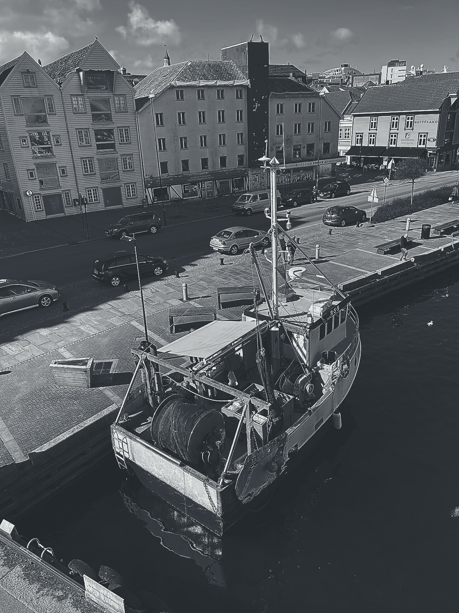
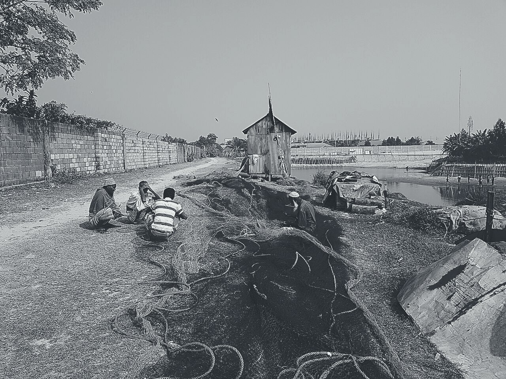
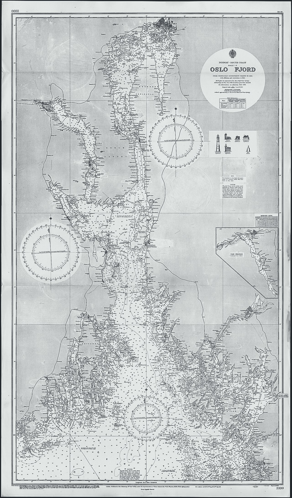

网具舱与港池平面
图幅按 12 栏排：平面图占 1 至 8 栏并向左出血 40px，图例挂 9 至 12 栏、高度只到平面图的 62%，顶部对齐平面图三分之一处。图廓留边 32px（4 个基线单位），档案条目之间只留 8px。滚过 200px 后平面图缩到 68% 并向上让位，图例不缩放。
第 1 层 · 1934 原始平面（实线）：网具库外墙、隔断、柱网、码头岸线与 14 个热区边界
第 2 层 · 1936 网具区修订（长虚线）：扫描缺页，本层按 30% 不透明度占位
第 3 层 · 1938 水深补测（点划线）：12 个测点与三条等深线
- 硫酸纸透叠：三层错位
0 / 3 / 7px，边缘1px纸张毛口；交叠处亮度自动降低6%，由 multiply 混合模式算出，不是手工调的颜色。 - 铅笔标注：线宽固定
0.8px硬线、端点方头，末端带2–6px橡皮擦除残迹（中断后留12%浅底），修订编号R-3 / R-7 / R-9写在擦痕旁。 - 第 2 层扫描缺页：这一层以
30%不透明度占位，占位下只剩可辨认的轮廓；热区 14 个，面积按舱室真实面积等比，不等量、不等距。
三层各是哪一年
透叠是把不同年代的信息压在同一张图上，三层必须错开才读得出各自属于哪一年。切换年份时只有对应层升到 100%，其余降到 30%。
第 1 层 · 1934 原始平面（实线）
- 柱网
32单位（0.8m），轴线全落在8px基线上；14 个热区的边界与登记面积在这一层定下。 - 图廓双线
1.2px，四角测绘十字、边中刻线各1处；图廓内 8px 纸格不参与测量。 - 码头前沿
0.8px、岸线1.2px，岸线上 9 个系缆桩按80单位等距，引桥在东北角。 - 网具盘、绞车基座、卷筒、测深台与登记角里的家具都用同一支
0.8px铅笔线画，不填色。
第 2 层 · 1936 网具区修订（长虚线）
R-3：B-3 北界外移32单位，堆放面积从8.32m²加到9.36m²。R-7：铅坠与浮标柜向东南移24单位，原位擦痕长72、高14单位。R-9：绞车基座加大后原线被擦断，擦痕宽96、高18单位，浅底12%。- 修订线一律长虚线
14 / 5，线宽与第 1 层同为0.8px：三层是同一支铅笔。
第 3 层 · 1938 水深补测（点划线）
12个测点：最低3.2m、最高6.0m，全落在 G-1 港池水深区。- 三条等深线按三级粗细递变
0.8 / 1.0 / 1.2px，用点划线与本层其余标注区分。 - 测点十字
0.8px，水深数字用等宽字面；港池边界、系船浮筒、沉船标记与灯桩在同一层补上。
硫酸纸缺页登记
第 2 层（1936 年）硫酸纸扫描缺页（错误码 TRACE-36）：该层以 30% 不透明度占位，其余两层可正常读，重扫后自动补上
缺页期间照常可用的：第 1 层的 14 个热区边界与登记面积、第 3 层的 12 个水深测点与三条等深线、图例的三种线型。读不到的是 R-3 / R-7 / R-9 三处修订的准确位置，占位层只剩 30% 轮廓，量出来的尺寸不作数。
重扫登记：第 2 层排在队首，扫描分辨率固定 600dpi、色深 8bit，出图后按原线宽 0.8px 与 1px 纸张毛口核对。
热区登记表
14 个热区按真实面积等比，编号就是阅读顺序与 Tab 顺序。点平面图上的任一个区，图例里对应的线型加粗一次；面积按图内 1 单位 = 1.25cm 换算。
| 编号 | 舱室 | 所在层与线型 | 面积 | 1936 登记 | 最近修订 | 状态 |
|---|---|---|---|---|---|---|
B-3 | 拖网堆放区 | 1934 实线 ＋ 1936 长虚线 | 9.36m² | 11 张拖网 | 1936-04-11 | 可读 |
B-1 | 圆形网具盘 | 1934 实线 | 2.24m² | 3 盘 | 1934-11-02 | 可读 |
B-2 | 手线卷架 | 1934 实线 | 3.36m² | 42 卷手线 | 1935-06-18 | 可读 |
B-4 | 待修网堆 | 1934 实线 ＋ 1936 长虚线 | 5.04m² | 7 张待修 | 1936-04-11 | 可读 |
N-1 | 修补网桌 | 1934 实线 | 3.50m² | 2 张网桌 | 1937-02-24 | 可读 |
N-2 | 铅坠与浮标柜 | 1936 长虚线 | 3.22m² | 1 柜铅坠 | 1936-04-02 | 可读 |
W-1 | 绞车基座 | 1934 实线 | 3.06m² | 1 台绞车 | 1935-09-09 | 可读 |
W-2 | 卷筒与缆索盘 | 1934 实线 | 5.10m² | 2 盘缆索 | 1935-09-09 | 可读 |
R-1 | 登记角 | 1934 实线 | 2.50m² | 1 册登记簿 | 1938-01-16 | 可读 |
D-1 | 东侧舱门 | 1934 实线 | 2.30m² | 未登记 | 1934-11-02 | 可读 |
D-2 | 上甲板梯口 | 1934 实线 | 2.52m² | 未登记 | 1934-11-02 | 可读 |
S-1 | 测深台 | 1938 点划线 | 4.20m² | 1 台测深仪 | 1938-03-05 | 可读 |
M-1 | 码头岸线 | 1934 实线 | 7.40m² | 未登记 | 1934-11-02 | 无记录 |
G-1 | 港池水深区 | 1938 点划线 | 15.00m² | 12 个测点 | 1938-03-05 | 待重扫 |
这个区域还没有测绘记录。第一份平面图登记于 1934 年冬
空状态挂在 M-1 码头岸线上：它是 14 个热区里唯一只被登记、没被测绘过的区，图上只有岸线、系缆桩与引桥，没有测点也没有等深线。修正入口在硫酸纸缺页登记区块。
档案图版
六张照片与扫描件都本地化在 assets/ 下，页面只引用这些文件。照片先扫成灰度，再压到石墨与纸色两个色阶，保留铅笔压痕的侧向阴影；不加暖色滤镜，也不叠纸张纹理贴图。
-

图版一 斯塔万格港的渔船侧靠码头，甲板上的网筒绞车与成捆渔网；压成两级后缆绳与网衣的层次仍分得开。Wolfmann · CC BY-SA 4.0 · Wikimedia Commons -
图版二 罗弗敦群岛亨宁斯韦尔的港湾：港池的等深线在 1938 年那层，岸线在 1934 年那层。Christoph Strässler（Oberdorf BL, Schweiz）· CC BY-SA 2.0 · Wikimedia Commons -

图版三 渔网摊在岸上修补，绳圈与网衣直接铺地；B-4 待修网堆登记的 7 张就是这种状态。Zaheed Sarwer Khan · CC BY 4.0 · Wikimedia Commons -
图版四 奥镇的鳕鱼晾晒架：网具舱的通风口朝这一侧，1935 年的修订把通风口挪过 24单位。DXR · CC BY-SA 4.0 · Wikimedia Commons -

图版五 英国海军部第 2330号海图（1903 年，奥斯陆峡湾南岸第 4 幅）：图上那种手工水深读数与罗盘玫瑰，本页港池的12个测点沿用了这套写法。United Kingdom Hydrographic Office · 公有领域 · Wikimedia Commons -
图版六 同一张 HAER 测绘件的局部：平面视图里的肋骨线每 32单位一根，与本案柱网同间距，编号0至21。Lockett, Dana · 公有领域 · Wikimedia Commons
_%C3%98STERV%C3%85GKAIEN_Stavanger_havn_harbour_NORWAY_2022-03-29_Sale_from_fishing_boat_Garnrulle_Net_drum_winch_Foto_fra_Jorenholmen_P-hus_B.jpg){kind=link}


版面与柱网
- 栏与基线12 栏、基线
8px、栏间距20px，图廓留边32px；标注线落在基线格上，0.8px 硬线压在整像素之间也不做位移补偿。 - 不对称平面图占 1 至 8 栏并向左出血
40px；图例悬在 9 至 12 栏，高度只到平面图的62%，顶部对齐平面图三分之一处；比例尺固定240px，贴版心右下角。 - 留白节奏图幅外围留 4 个基线单位，档案条目之间只留 1 个基线单位，形成图幅大留白、条目小间距的两级节奏。
- 行长与行高说明文按 38 个汉字的行长排、行高
1.9，长宋宽排；标题用报纸衬线加思源宋体宽排，字距0.04em。 - 窄屏折叠单栏之后三层硫酸纸按层折叠成三个可展开的板块，点层标题展开该层标注；比例尺改贴图幅内沿
24px。
| 线宽 | 用在哪 | 处数 |
|---|---|---|
0.5px | 热区外圈细圈，进入热区后变虚线；单独一层，不参与热区命中 | 14 |
0.8px | 铅笔硬线：隔墙、热区边界、门扇与开启弧、系缆桩、梯踏面、测点十字、深虚线修订线 | 主层 |
1.0px | 等深线中位一条，只出现在第 3 层 | 1 |
1.2px | 图廓双线、外墙、码头岸线、等深线内外位、三角点与锚位符号 | 9 |
1.4–2px | 窄屏（<1024px）平面图按 0.8px × 1.7 补偿，热区边界 1.4px，图廓与外墙 2px | 全部 |
≥1440px12 栏，平面图满幅左出血 40px，比例尺 240px，图例在右侧 9 至 12 栏。
1024–1439px折为 9 栏，图例移到平面图下方并横向排成 2 列，比例尺缩到 180px。
<1024px单栏，三层硫酸纸折叠成三个可展开板块，比例尺固定在页脚不随滚动，热区点击面积一律不小于 44×44px。
动效与降级
位移只跑 transform 与 opacity。滚动量不参与逐帧换算，只在滚过 200px 时翻一次状态，其余交给 600ms 阻尼缓动收尾。
- 滚动滚过
200px后平面图缩到68%并向上让位，600ms阻尼无过冲；图例保持原位不缩放。 - 悬停热区边界由
0.8px变1.2px并在状态条显示登记号，140ms、无位移；圈住热区的0.5px细圈进入后变虚线。 - 加载三层硫酸纸按 1934 / 1936 / 1938 顺序依次叠上，每层
220ms，线性缓动，模拟手动落纸。 - 转场年份切换用
260ms交叉叠化，只有两层参与，第三层保持不动。 - 点击点击热区时该区在图例中的对应线型同步加粗一次，
160ms，只改线宽不改位置。
减少动态时的再发明（prefers-reduced-motion: reduce）：三层硫酸纸一次成型、静态全部可见，不透明度固定在 100% / 30% / 56%；平面图保持原尺寸、位移 0px；年份切换改 100ms 不透明度瞬切；比例尺改贴图幅内沿 24px，不贴视口下沿；线宽仍是 0.8px 与 1.2px 两级，14 个热区与 44×44px 触屏热区不变。
| 机制 | 桌面档 | 减少动态时 | 单栏窄屏 |
|---|---|---|---|
| 平面图缩放 | 滚过 200px 缩到 68%，600ms 阻尼 | 保持原尺寸，位移 0px | 保持原尺寸，图幅全量可见 |
| 三层叠上 | 1934 / 1936 / 1938 依次 220ms 线性 | 一次成型，静态全可见 | 折成三个可展开板块 |
| 年份切换 | 260ms 交叉叠化，两层参与 | 100ms 不透明度瞬切 | 同上，另可按层展开标注 |
| 热区反馈 | 边界 0.8px 变 1.2px，140ms，无位移 | 线宽照旧，去掉过渡 | 边界 1.4px，热区不小于 44×44px |
| 比例尺 | 贴视口下沿内 24px | 贴图幅内沿 24px | 固定在页脚，不随滚动 |